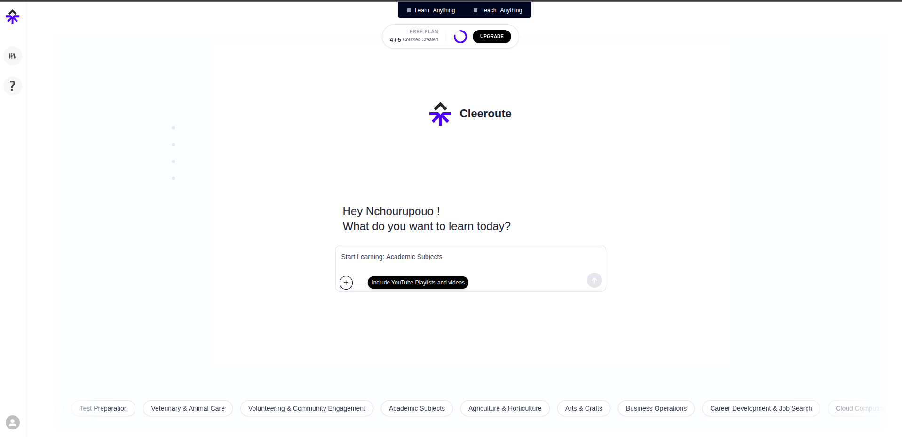
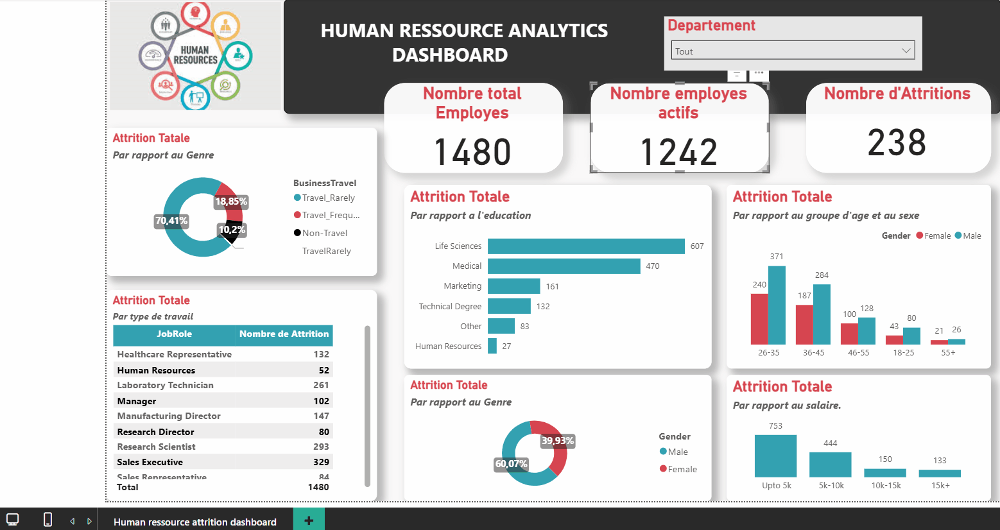
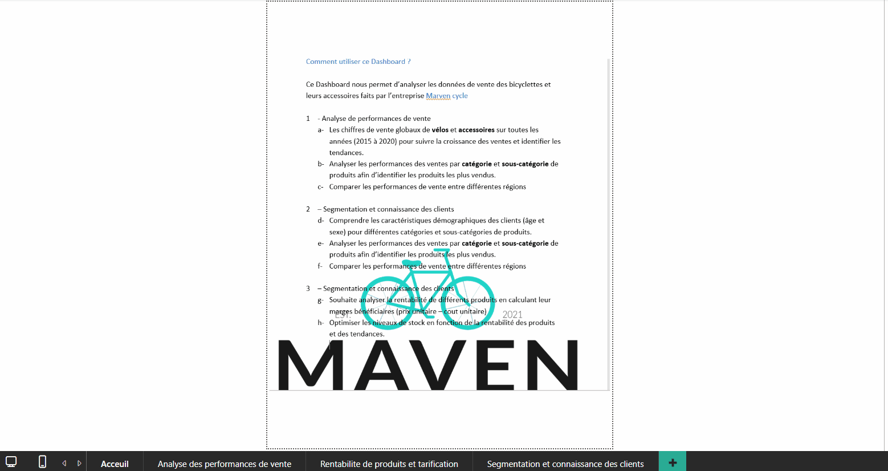
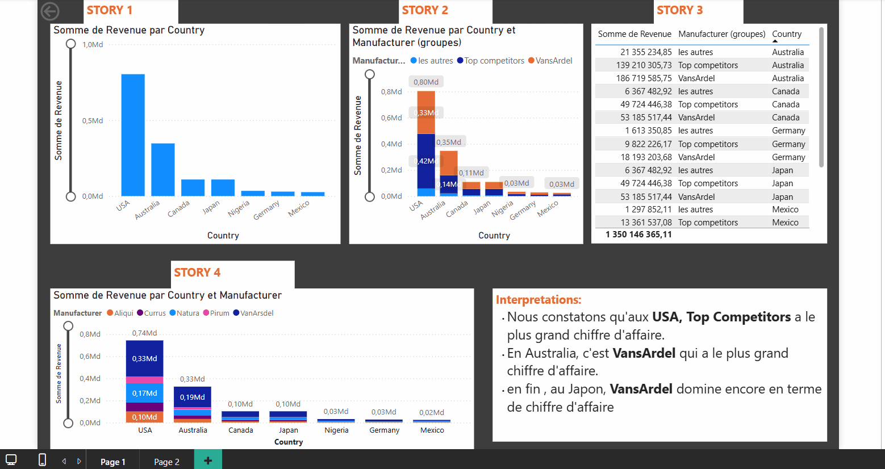

Mes Réalisations
Une sélection de mes travaux en Data Science, Engineering et Développement Backend.
Cleeroute - EdTech system
Une application basée sur l'intelligence artificielle et youtube pour fournir des contenus éducatifs de qualité et un accompagnement personnalisé aux apprenants. j'ai participé au développement de cette platform en tant que AI Engineer. visitez cleeroute

🌐 Deep Learning : Prédiction Boursière (TSLA)
Développement d'une application de prévision de séries temporelles utilisant des architectures LSTM et NeuralProphet. Le système analyse les tendances historiques pour prédire la valeur de clôture de l'action Tesla.
Voir sur Hugging Face

🌐 Système d'Archivage Sécurisé - Hydro-Mekin
Conception d'une plateforme robuste de gestion des données du personnel. Focus sur la sécurisation des informations sensibles et l'optimisation des flux RH via une interface d'administration Django sur mesure.
📊 Digital Connectivity and education Index : Population Indienne
Analyse de l'accès à internet et à l'éducation pour 5M de foyers. Identification des disparités régionales et des "zones blanches" via une cartographie interactive pour orienter les politiques d'inclusion numérique.

📊 HR Analytics : Dashboard de l'Attrition
Outil d'aide à la décision pour la rétention des talents. Analyse des facteurs de départ (1400+ employés) par département, salaire et niveau d'étude pour réduire le turnover.

📊 Sales Performance : Maven Cycles
Analyse multidimensionnelle des ventes sur 5 ans. Segmentation client et suivi de la rentabilité par catégorie de produit pour optimiser les marges bénéficiaires régionales.

📊 Segmentation & Rentabilité Produits
Approfondissement de l'analyse Maven Cycles focalisé sur la connaissance client et l'optimisation des stocks en fonction de la saisonnalité et de la demande régionale.
